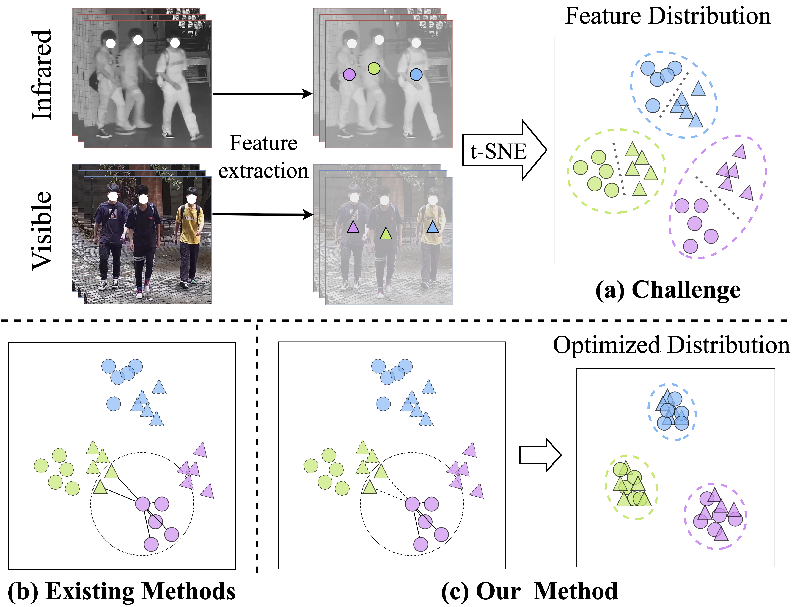
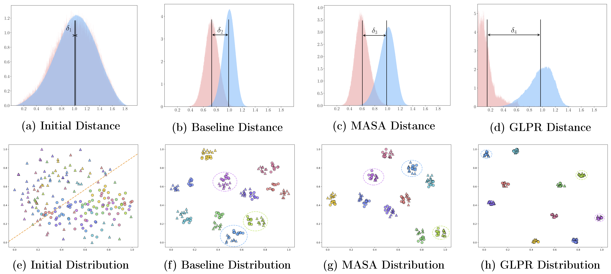

PRISM: Propagating-based Refined Semantic Features with Bipartite Matching for Visible-Infrared Group Re-Identification
Abstract
Visible-infrared group re-identification (VI-GReID) aims to match group images containing the same members captured by visible and infrared cameras. Existing methods project different modality features into a shared embedding space and leverage the pedestrian relationships for inference. However, they overlook modality-related information and bidirectional relationships, while employing inefficient matching strategies. To address these issues, we propose a Propagating-based Refined Semantic Features with Bipartite Matching (PRISM) framework, which learns discriminative representations and bridges the modality gap for efficient group matching. Specifically, Modality-Aware Semantic Alignment (MASA) is designed to generate modality-aware prototypes to aggregate discriminative features. Moreover, we present a Global-Local Propagation Refinement (GLPR) to refine feature representations via high-confidence relationships. To measure group similarity, we model this as a bipartite matching problem and introduce Minimum Cost Bipartite Matching (MCBM) to solve it. Extensive experiments on four benchmark datasets demonstrate the superiority of our proposed method.

Framework
PRISM consists of three collaborative modules for VI-GReID: MASA, GLPR, and MCBM. MASA decomposes prototypes into a shared base and modality-specific offsets to produce modality-aware part features while preserving permutation invariance. GLPR then performs confidence-guided global-to-local propagation, reducing modality gaps and improving identity compactness. Finally, MCBM formulates group matching as a size-penalized bipartite optimization problem and computes robust group-level distances.
This design explicitly addresses three core challenges in VI-GReID: modality discrepancy, ambiguous cross-set relations, and group-size inconsistency.

Experimental Results
On CM-Group, PRISM achieves 80.4% Rank-1 and 81.7% mAP, significantly surpassing previous methods. On person-level VI-ReID benchmarks, PRISM also shows strong generalization: 91.0/91.4 (Rank-1/mAP) on SYSU-MM01 all-search, 97.5/97.5 on RegDB IR-to-VIS, and 75.5/75.3 on LLCM IR-to-VIS.
Visualization results further demonstrate that PRISM progressively enlarges inter-/intra-class margins and yields more compact, modality-invariant clusters, confirming the effectiveness of MASA and GLPR.

BibTeX
@inproceedings{Hu2026PRISM,
title={PRISM: Propagating-based Refined Semantic Features with Bipartite Matching for Visible-Infrared Group Re-Identification},
author={Hu, Ping and Zhu, Tongqing and Han, Lianjin and Wu, Junhang and Zhao, Kai and Zhu, Zheng and Zhao, Jian},
booktitle={ICASSP},
year={2026}
}